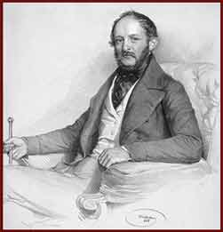

|  | |
|
Drawing by Josef Kriehuber, a Viennese artist In the 1840s Wodianer converted to Calvinism, and later he was ennobled. He was a leading figure in commercial life and he played an important role in the foundation of the Pest Hungarian Commercial Bank. |
|